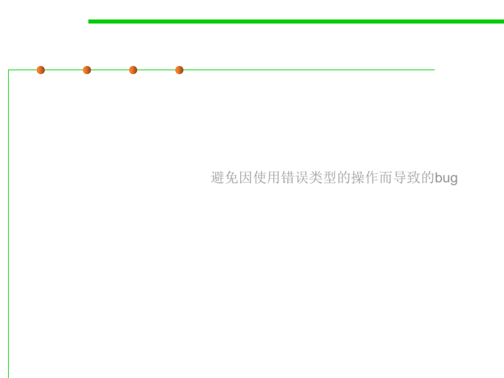

Static checking
3.1 Data Type and Type Checking
▪ Static checking means checking for bugs at compile time.
▪ Bugs are the bane(灾祸) of programming.
▪ Static typing prevents a large class of bugs from infecting your
program: to be precise, bugs caused by applying an operation to the
wrong types of arguments. 避免因使用错误类型的操作而导致的bug
▪ If you write a broken line of code like:
"5" * "6"
that tries to multiply two strings, then static typing will catch this error
while you’re still programming, rather than waiting until the line is
reached during execution.